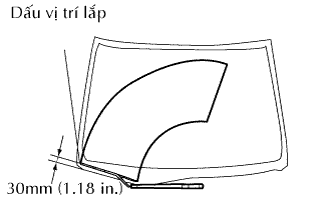
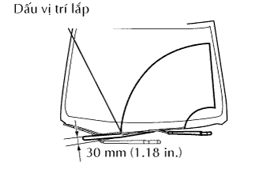

MÔTƠ VÀ THANH NỐI GẠT NƯỚC TRƯỚC > LẮP RÁP |
| 1. LẮP CỤM MÔTƠ RỬA KÍNH CHẮN GIÓ |
 |
Dùng chìa hoa khế T30, lắp môtơ gạt nước bằng 2 bulông.
Bôi mỡ MP vào các chi tiết trượt của môtơ gạt nước và 2 thanh nối của gạt nước.
Lắp thanh dẫn động gạt nước vào môtơ gạt nước bằng 2 bulông.
| 2. LẮP CỤM MÔTƠ GẠT NƯỚC KÍNH CHẮN GIÓ VÀ THANH NỐI |
Di chuyển môtơ gạt mưa và thanh dẫn động theo hướng mũi tên như trong hình vẽ để nhả miếng đệm gạt mưa ra khỏi thân xe và lắp môtơ gạt mưa và thanh dẫn động.
Lắp 2 bulông.
Lắp giắc nối.
| 3. LẮP CỤM MÁNG THÔNG GIÓ TRÊN VÁCH TÁP LÔ TRÁI |
 |
Gắn 5 khóa cài và 4 kẹp, và lắp nắp.
Lắp vít.
| 4. LẮP CỤM MÁNG THÔNG GIÓ TRÊN VÁCH TÁP LÔ PHẢI |
 |
Gắn 5 khóa cài và 4 kẹp, và lắp nắp.
Lắp vít.
| 5. LẮP GIOĂNG PHÍA TRÊN TỪ NẮP CAPÔ ĐẾN VÁCH NGĂN |
 |
Gắn 2 kẹp và lắp phớt.
| 6. LẮP CỤM TAY GẠT VÀ LƯỠI GẠT NƯỚC TRƯỚC PHẢI |
 |
Dừng môtơ gạt nước ở ở vị trí ngừng tự động.
Lau rãnh khía của tay gạt nước với dũa tròn hay tương được.
Lau rãnh khía của chốt quay tay gạt nước với dũa tròn hay tương đương.
|  |
Lắp tay gạt và lưỡi gạt sao cho lưỡi gạt và tay gạt ở vị trí như trong hình vẽ.
| 7. LẮP CỤM TAY GẠT VÀ LƯỠI GẠT NƯỚC TRƯỚC TRÁI |
|
Lau rãnh khía của tay gạt nước với dũa tròn hay tương được.
Lau rãnh khía của chốt quay tay gạt nước với dũa tròn hay tương đương.
|  |
Lắp tay và lưỡi gạt bằng đai ốc. Chắc chắn rằng tay và lưỡi gạt đến vị trí như trong hình vẽ.
Hoạt động gạt mưa trước trong khi phun nước lên kính chắn gió. Chắc chắn rằng không có va chạm giữa lưỡi gạt và trụ.
| 8. NỐI CÁP ÂM ẮC QUY |
| 9. TIẾN HÀNH THIẾT LẬP BAN ĐẦU |
Tiến hành thiết lập ban đầu (Xem trang Kích chuột vào đây).